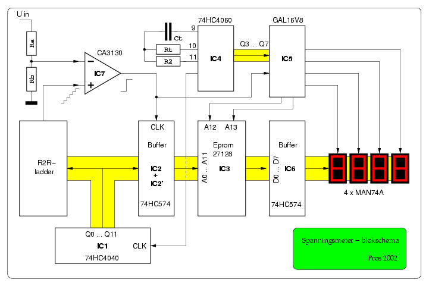
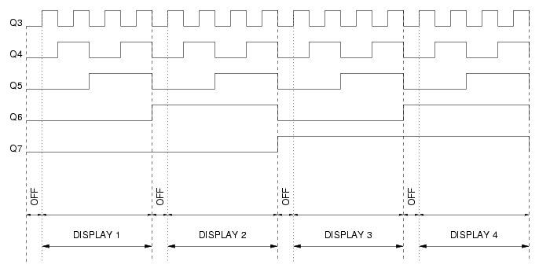
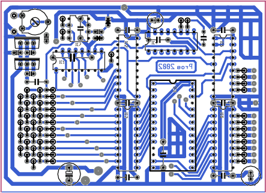
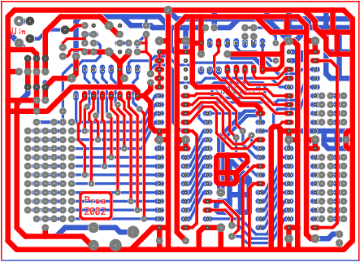
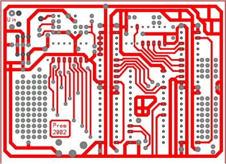
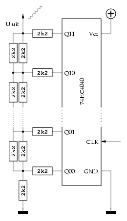
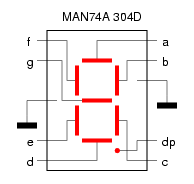
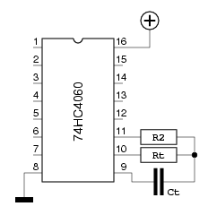

Deze spanningsmeter is in de eerste plaats bedoeld om dienst te doen als spannings- en stroomuitlezing in een regelbare voeding.
Waarom een spanningsmeter ontwerpen, als er toch
voldoende IC's in de handel zijn, die speciaal voor
deze taak ontworpen zijn, om van kant-en-klare
modules maar te zwijgen?
Het antwoord op deze vraag luidt: omdat (bijna) alle benodigde
onderdelen in ruime mate gratis beschikbaar zijn. Inderdaad, het werd
hoog tijd al die eproms en LED-displays die hier liggen te
niksen eens voor een nuttig doel in te zetten.
Daar komt bij dat het uitleesgedeelte (IC3, IC4, IC5, IC6 en de
LED-displays) een bruikbare basis vormt voor andere
toepassingen. Denken we maar aan een hexadecimaal display dat 12
bits kan weergeven, bijvoorbeeld (hierbij volstaan dan 3
displays).

De schakeling is zo eenvoudig van opzet, dat het blokschema
hiernaast de werking grotendeels verduidelijkt.
Dit blokschema kan gescheiden worden in twee delen.
Links zien we een teller (IC1, een 74HC4040) en een
R2R-ladder, die samen een trapspanning produceren. Deze
laatste komt op de niet-inverterende ingang van een opamp
(IC7) terecht. De te meten spanning wordt ―via een
spanningsdeler (Ra en Rb)― verbonden met de inverterende
ingang van deze opamp.
De uitgang van de opamp wordt hoog, zodra de spanning van de
R2R-ladder hoger wordt dan de te meten spanning. Deze positieve
flank wordt gebruikt om een buffer (IC2/IC2', twee maal een
74HC574) te “klokken”, zodat de tellerstand van de
binaire deler opgeslagen wordt. Deze tellerstand is nu
een maat voor de gemeten spanning.
Rechts van het meetgedeelte zien we het deel dat de gemeten
spanning zichtbaar maakt.
Om te beginnen is er (IC3), een Eprom die de tellerstand
(A00 ... A11) omzet naar data voor de LED-displays. Hij
wordt bij die taak geholpen door een GAL16V8 (IC5), die het
multiplexen voor zijn rekening neemt. De adreslijnen A00 ... A11
van de Eprom zijn verbonden met de uitgangen van buffer IC2. A12
en A13 worden gestuurd door IC5, die alzo een keuze maakt uit
één van de vier datablokken, en tevens het bijpassende
LED-display activeert.

Zoals het tijdschema hiernaast toont, wordt er een korte pauze in acht genomen tussen het omschakelen van het ene display naar het andere. Dit voorkomt mogelijke “spookcijfers” die kunnen verschijnen tengevolge van de traagheid van de Eprom.
  

De digitale resolutie hangt af van het aantal stappen dat het teller-IC, dat de R2R-ladder aandrijft, nodig heeft om de maximale waarde te bereiken. In het geval van een 74HC4040 zijn dat 4096 stappen. Daaraan valt weinig te veranderen.
Hoe die 4096 stappen verdeeld worden, is afhankelijk van de
eprom, die de LED-displays stuurt. In het geval we
spanningen willen meten tot 4Volt of tot 40Volt, volstaat het
de eprom te vullen met cijfers van 0-0-0-0 tot 4-0-9-5, waarbij
we de decimale punt op de juiste plaats zetten.
Willen we echter spanningen tot 60Volt meten ―zoals in de
50V-voeding het geval is― dan is 40 als hoogste waarde
ontoereikend, terwijl het verkwisting zou zijn, 400.9 als
hoogste waarde te programmeren. Daarom is er een eenvoudig
tooltje (DisplayEprom) ontwikkeld, dat slechts één
argument behoeft: de hoogste spanning die we verwachten te
meten, in de vorm van een float (123.4 60.00 ...).
DisplayEprom zal dan een bestand, “eprom” genaamd,
aanmaken, dat zonder verdere bewerking in een 27128 kan
geplaatst worden.
De broncode van DisplayEprom vindt u hier.

Eens we bepaald hebben, welke de hoogste spanning is, die het display moet kunnen weergeven, komt het er op aan, de analoge spanningen aan de ingangen van de opamp op een passend niveau te brengen.
De eenvoudigste werkwijze bestaat er in, de spanning van de
R2R-ladder rechtstreeks naar de opamp te voeren, en de te meten
spanning langs een spanningsdeler om te leiden.
Indien het apparaat als stroommeter moet ingezet worden, lukt
deze aanpak niet. Er dienen dan namelijk kleine spanningen (>
5Volt) gemeten te worden. In dit geval wordt de te meten spanning
rechtstreeks naar de opamp geleid, en verlagen we de spanning van
de R2R-ladder via een spanningsdeler.
Het spreekt vanzelf, dat hiervoor de print-layout moet aangepast worden.
Globaal kunnen we stellen dat 1 á 2 spanningsmetingen
per seconde meer dan voldoende zijn.
Het multiplexen van de uitlezing dient uiteraard sneller te
gebeuren. Hier wordt de voorkeur gegeven aan minstens 100
cyclussen per seconde. Dat betekent, dat op Q7 van IC4 een
frequentie moet staan van 200Hz.
IC4 ―een 74HC4060― is een binaire teller als de 74HC4040,
met dit verschil dat hij een oscillator aan boord heeft. De
oscillatiefrequentie wordt bepaald door Ct en Rt,
waarbij ook R2 een bescheiden rol speelt.
De oscillatiefrequentie van IC4 moet dus 200 * 28,
zijnde 25600Hz (of iets meer) bedragen.
De frequentie van een 74HC4060 wordt als volgt berekend:

freq = 1/(2.5 * Ct * Rt)
R2 mag hierbij een waarde hebben van 2 * Rt tot
10 * Rt
Als we dat verder uitrekenen, komen we op:
1/(freq * 2.5) = Ct * Rt
Drukken we C uit in nF, en R in k, dan wordt het:
1000000/(freq * 2.5) = Ct * Rt
Of:
1000000/(25600 * 2.5) = 15.625
Nemen we 2k7 voor R, en 4n7 voor C, dan wordt de uiteindelijke formule:
freq = 1000000/(2.5 * 4.7 * 2.7) = 31520Hz
Op Q3 van IC4 staat dan een frequentie van 3940Hz, hetgeen ideaal
is om IC1 aan te sturen.
In theorie ziet alles er eenvoudig uit, maar hoe gedraagt het meettoestel zich in de praktijk? Dat valt best mee; vergelijkingen met een digitale multimeter wijzen uit dat de afwijking over het ganse bereik kleiner dan 1% blijft.
Anderzijds verwacht ik niet dat velen zich geroepen zullen
voelen om zoiets na te bouwen. Met een μC kan hetzelfde (of
zelfs een beter) resultaat bereikt worden op een print die
slechts een fractie bedraagt van dit project.
Maar het was leuk, iets dergelijks te ontwerpen, en dat is het
belangrijkste...